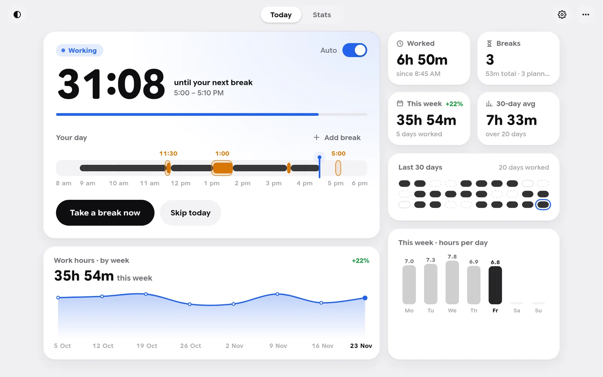
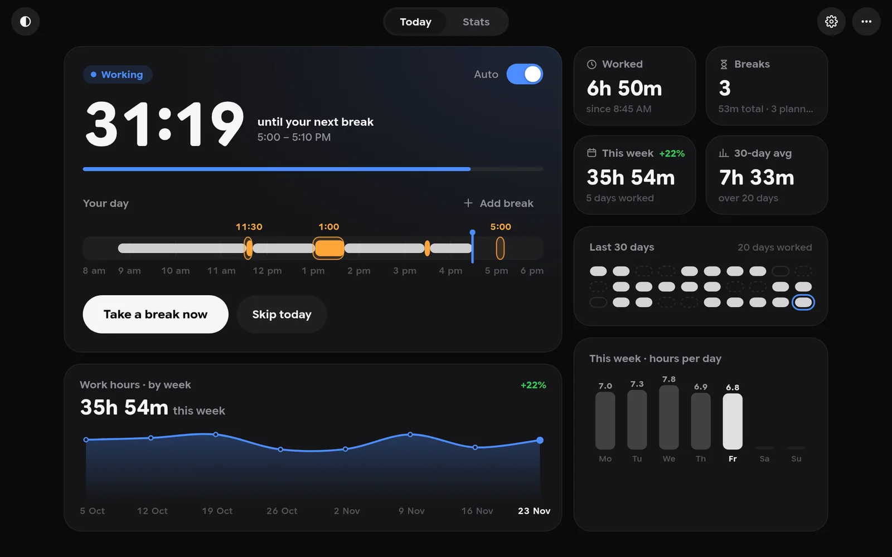
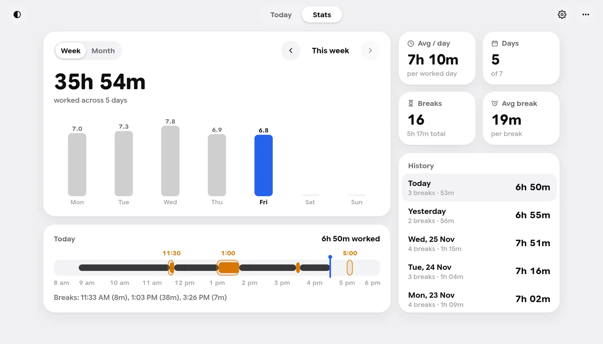
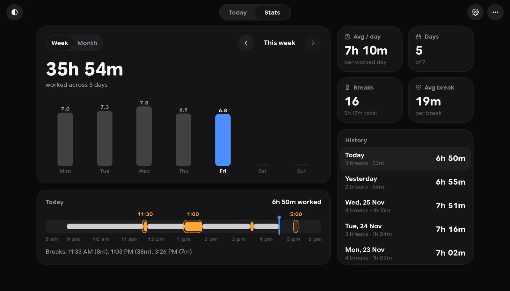
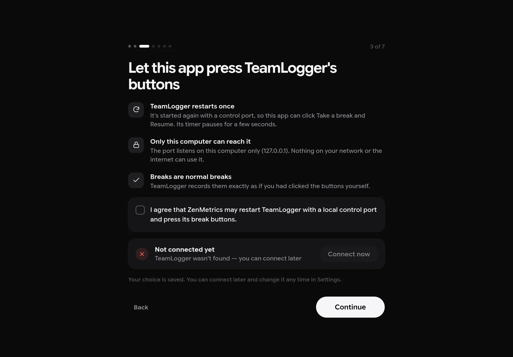

A countdown you can see
The time to your next break — or, on a break, until you’re back. In the window, and as a little ring in your menu bar, top bar or tray.
ZenMetrics presses Take a break in TeamLogger at the times you choose, counts down where you can see it, and presses Resume when you’re back.


What it does
The time to your next break — or, on a break, until you’re back. In the window, and as a little ring in your menu bar, top bar or tray.
A live countdown, a warning before the end, and an alarm that rings until you’re back — even if your laptop sleeps.
A heads-up, then the break starts and ends on time. Stretch it, or come back early.
Meeting running over? Skip just the next break, or the rest of today — and undo it.
Worked time straight from TeamLogger’s own total — week bars, a month calendar, an 8-week trend.
Work, breaks and what’s planned — click a break to change it.
Inside the app



Your next break, your day on one line, and this week’s numbers.
How it works
Get ZenMetrics from GitHub for your computer. The TeamLogger desktop app should already be installed and signed in.
It finds TeamLogger, asks your permission to press its buttons, and helps you pick your breaks — or start from 11:30, 1:00 and 5:00.
Close the window. The countdown stays in your menu bar or tray, and every break starts and ends on time.
Privacy & safety
ZenMetrics presses the same buttons you would. It doesn’t fake activity, hide anything from TeamLogger, or change TeamLogger in any way.
It talks to TeamLogger through a control port only your own computer can reach (127.0.0.1).
Nothing is restarted or clicked until you agree in setup.
Schedule, timeline and stats live on your computer. No account, no analytics.
Test mode runs everything — countdown, notifications, phone — without clicking in TeamLogger.
ZenMetrics is free and lives on GitHub. Pick the file for your system from the latest release — and if it saves you a click every day, a star helps other TeamLogger users find it.
Needs the TeamLogger desktop app on the same computer.
FAQ
No. ZenMetrics is an independent project — not made by, endorsed by or affiliated with TeamLogger. “TeamLogger” is used only to say which app it works with.
No. It presses TeamLogger’s own Take a break and Resume buttons, so each break is recorded exactly as if you had clicked yourself. It never changes TeamLogger.
Yes — free to download and use, including at work. It’s source-available under the PolyForm Internal Use License: read and change the code for your own use, but don’t redistribute it.
It restarts TeamLogger once with a control port that listens only on your own computer (127.0.0.1). Its timer pauses for a few seconds. After each login you may need to press Connect once more.
If it wakes more than five minutes after a break should have started, that break is marked missed rather than started late. Closing ZenMetrics never ends a break in progress.
No — phone alerts are optional. Without them, ZenMetrics still notifies you and plays a sound on your computer.
On your computer only. If you turn on phone alerts, break times are sent through ntfy to your private topic — nothing else.
ZenMetrics takes real, recorded breaks, but use it only where your employer’s break and monitoring policies allow it, and check TeamLogger’s terms for your account. You’re responsible for how you use it.